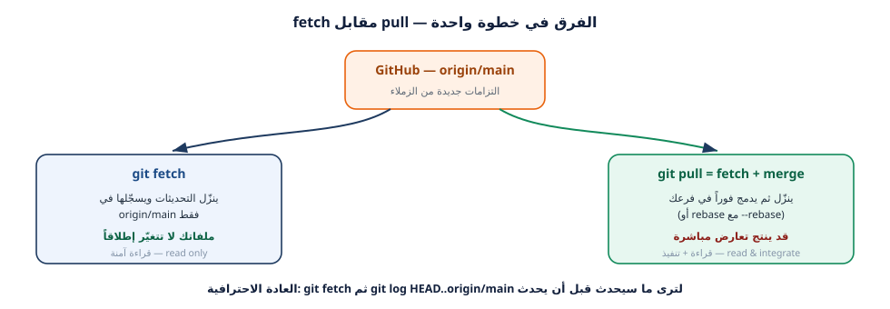
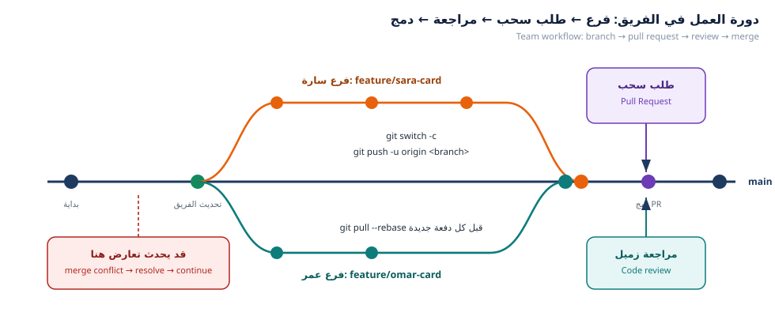

مشكلة كل فريق مبتدئ: «زميلي أضاف تعديلاً… وأنا لا أراه!». اليوم سنجيب على هذا السؤال عملياً: كيف تنتقل تعديلات الزملاء من مستودعهم إلى جهازك، وكيف يعمل الدمج (merge) خلف الكواليس، وما استراتيجيات الدمج الثلاث، وكيف ترجع عن تعديل أفسد شيئاً.
Every beginner team hits the same wall: “my teammate pushed a change… and I can't see it!” Today we answer that hands-on: how your teammates' work travels from their machine to yours, how merge really works, which merge strategies exist, and how to undo a bad change.
git fetch وgit pull وgit pull --rebase ومتى يُستخدم كل منها.--no-commit.diff, log -p, blame, shortlog.restore وcommit --amend وrevert وreset وstash.git fetch ينزّل تحديثات الخادم إلى جهازك دون أن يغيّر ملفاتك — إنه مثل «فتح
البريد وقراءته»، أما git pull فهو fetch متبوعاً بدمج (أو إعادة تشكيل)، أي «قراءة
البريد وتنفيذ ما فيه فوراً».
fetch downloads new objects but changes nothing in your working files; pull is fetch plus
integration (merge or rebase).
$ git switch main $ git fetch origin remote: Enumerating objects: 9, done. Unpacking objects: 100% (9/9), done. From https://github.com/school-git-workshop/class-team-hub a1b2c3d..f9e8d7c main -> origin/main $ git status -sb ## main...origin/main [behind 2] $ git log --oneline HEAD..origin/main f9e8d7c feat(members): add card for leen-docs 3c7d9e1 Merge pull request #7 from nour-dev/feature/nour-card

افحص دائماً قبل الدمج: git fetch ثم git log --oneline HEAD..origin/main ثم
git diff HEAD..origin/main. تقرأ ما سيحدث قبل أن يحدث — وهذا يمنع معظم المفاجآت.
git status -sb بعد fetch واذكر أين أنت (متقدّم/متأخر/متساوٍ):$ git status -sb
behind N): …………git log: ……………………………………الطريق الأفضل عندما لا يوجد تعارض — الدمج السريع (fast-forward):
$ git merge --ff-only origin/main Updating a1b2c3d..f9e8d7c Fast-forward data/members/leen-docs.json | 9 +++++++++ data/members-index.json | 5 +++-- 2 files changed, 13 insertions(+), 4 deletions(-) $ git status On branch main Your branch is up to date with 'origin/main'.
تعني أن main المحلي لم يكن فيه أي عمل خاص بك، فكل ما احتاجه Git هو «تقديم المؤشر»
إلى الأمام بلا إنشاء التزام دمج. التاريخ يبقى خطاً نظيفاً بلا عُقد.
الطريق الثاني عندما يوجد عمل متبادل — دمج بعقدة (merge commit):
$ git merge feature/omar-qa-card Merge made by the 'ort' strategy. data/members/omar-qa.json | 9 +++++++++ 1 file changed, 9 insertions(+) create mode 100644 data/members/omar-qa.json
| الرسالة | السبب | الحل |
|---|---|---|
fatal: Not possible to fast-forward |
يوجد عمل على الطرفين | استخدم git merge بلا --ff-only |
fatal: refusing to merge unrelated histories |
مستودعان غير مرتبطين | git pull --allow-unrelated-histories |
error: Your local changes would be overwritten |
تعديلات محلية غير محفوظة | git stash ثم الدمج ثم git stash pop |
الصق مخرجات عملية الدمج التي نفّذتها، وحدّد أي نوع دمج وقع:
$ git merge ……………………………
نوع الدمج: ☐ fast-forward ☐ merge commit ☐ لا يوجد تغيير (already up to date)

الهدف: أن تفرّق بنفسك بين أثر الاستراتيجيات الثلاث على تاريخ المشروع.
على GitHub سترى في زر الدمج ثلاث خيارات: Create a merge commit وSquash and merge
وRebase and merge. كل خيار يُنتج تاريخاً مختلف الشكل. جربها محلياً قبل أن تضغطها.
On GitHub the merge button offers three modes. Try them locally first so you know exactly what each one does to history.
تجربة 1 — دمج بعقدة (merge commit):
$ git switch main $ git merge --no-ff feature/ali-card -m "Merge pull request #6 from ali-h/feature/ali-card" $ git log --oneline --graph -4 * 5b6c7d8 (HEAD -> main) Merge pull request #6 from ali-h/feature/ali-card |\ | * 1a2b3c4 feat(members): add card for ali-h |/ * f9e8d7c feat(members): add card for leen-docs
تجربة 2 — الدمج المضغوط (squash):
$ git switch main $ git merge --squash feature/sara-fixes Squash commit -- not updating HEAD Automatic merge went well; stopped before committing as requested $ git commit -m "feat(ui): improve member card layout (#9)" [main 7a8b9c0] feat(ui): improve member card layout (#9) 2 files changed, 18 insertions(+), 6 deletions(-) $ git log --oneline -2 7a8b9c0 (HEAD -> main) feat(ui): improve member card layout (#9) 5b6c7d8 Merge pull request #6 from ali-h/feature/ali-card
لاحظ أن التزامات سارة الثلاثة صارت التزاماً واحداً نظيفاً على main. هذا أفضل خيار
لفروع صغيرة كثيرة الالتزامات غير المهمة (مثل fix ثم fix ثم fix).
تجربة 3 — إعادة التشكيل (rebase):
$ git switch feature/nour-card $ git rebase main Successfully rebased and updated refs/heads/feature/nour-card. $ git log --oneline --graph -4 * 4d5e6f7 (HEAD -> feature/nour-card) feat(members): add card for nour-dev * 5b6c7d8 Merge pull request #6 from ali-h/feature/ali-card * 1a2b3c4 feat(members): add card for ali-h * f9e8d7c feat(members): add card for leen-docs
| الاستراتيجية | شكل التاريخ | متى نستخدمها |
|---|---|---|
| Merge commit | فروع وعُقد واضحة | فرع طويل بمهام متعددة |
| Squash | التزام واحد نظيف | فرع صغير، أو إصلاحات متتابعة |
| Rebase | خط مستقيم بلا عُقد | تاريخ خطّي للعرض والمراجعة |
لا تنفّذ rebase على فرع مشترك يعمل عليه زملاؤك، لأنها تعيد كتابة التاريخ وتسبب
فوضى عندهم. القاعدة: rebase للفروع الشخصية، merge للفروع المشتركة.
git log --oneline --graph -6 بعد تجربة squash + rebase:$ git log --oneline --graph -6
سؤال: أي استراتيجية تفضّل لمشروع فريق فيه 20 طالباً يضيفون بطاقات؟ ولماذا؟ (سطران)
الهدف: أن تجيب بدقة: من عدّل هذا السطر؟ ومتى؟ ولماذا؟ — مهارة المراجعة الأساسية.
$ git log --oneline --all --graph --decorate -12 * f9e8d7c (origin/main, origin/HEAD, main) feat(members): add card for leen-docs * 3c7d9e1 Merge pull request #7 from nour-dev/feature/nour-card |\ | * 8c9d0e1 (origin/feature/nour-card) feat(members): add card for nour-dev |/ * a1b2c3d Merge pull request #6 from ali-h/feature/ali-card |\ | * 1a2b3c4 (origin/feature/ali-card) feat(members): add card for ali-h |/ * 8de1e7a chore: initial commit of class-team-hub $ git log -p -- data/members/leen-docs.json commit f9e8d7c9a8b7c6d5e4f3a2b1c0d9e8f7a6b5c4d3 Author: leen-docs <leen@example.com> Date: Mon Oct 6 11:02:40 2026 +0300 feat(members): add card for leen-docs +{ + "fullName": "لينا حدّاد", + "github": "leen-docs", + "role": "كاتب توثيق", + "favoriteCommand": "git diff main..HEAD --stat", + "message": "أكتب التوثيق الذي يجعل المشروع مفهوماً لأي طالب جديد في دقيقتين.", + "tags": ["Markdown", "Documentation"], + "joinedAt": "2026-10-06" +} $ git blame data/members/leen-docs.json f9e8d7c9 (leen-docs 2026-10-06 11:02:40 +0300 1) { f9e8d7c9 (leen-docs 2026-10-06 11:02:40 +0300 2) "fullName": "لينا حدّاد",
git shortlog -sn --all يعطيك ترتيب المساهمين بعدد الالتزامات، وgit log --author="omar"
يعطيك كل ما فعله شخص واحد. استخدمهما في تقرير الفريق النهائي (المهمة 6).
| السؤال | جوابك |
|---|---|
من عدّل data/members-index.json آخر مرة؟ ولاحظ: هل عدّله أكثر من شخص؟ |
……………………… |
عدد الالتزامات لكل زميل حسب git shortlog -sn --all |
…………………………… |
هل نسخة main عندك متساوية مع origin/main؟ (git status) |
☐ نعم ☐ لا |
الصق مخرجات git log --oneline --graph --all --decorate -10:
$ git log --oneline --graph --all --decorate -10
الهدف: أن تتصرف بثقة عند أي خطأ، وتعرف أي أمر يتراجع عن أي حالة.
أغلب أوامر Git لا تُفني عملك — إنها فقط تنقل المؤشر. والمفتاح الذي ينقذك دائماً هو
git reflog (سجل كل حركات HEAD). لكن الأمرين الوحيدين الذين يحذفان فعلاً بلا رجعة
هما git reset --hard وgit restore على ملف لم تُلتزمه.
Most Git commands don't destroy work — they move pointers. Your safety net is git reflog.
The only genuinely destructive ones are git reset --hard and git restore on uncommitted work.
الحالة 1 — تعديل محلي فاسد لم تُلتزمه بعد:
$ echo "كلام فاسد" >> README.md $ git status -s M README.md $ git restore README.md $ git status -s (لا مخرجات — الملف عاد لحالته الأخيرة)
الحالة 2 — التزام رسالته خاطئة ولم يُرفع بعد:
$ git commit --amend -m "docs(readme): add FAQ section" [main 2b3c4d5] docs(readme): add FAQ section Date: Mon Oct 6 11:40:02 2026 +0300 1 file changed, 4 insertions(+)
الحالة 3 — التزام مرفوع إلى GitHub (لا تعدّل التاريخ!):
$ git revert --no-edit 8de1e7a [main 6f7e8d9] Revert "feat(ui): change card colors" 1 file changed, 3 insertions(+), 3 deletions(-) $ git log --oneline -3 6f7e8d9 (HEAD -> main) Revert "feat(ui): change card colors" 2b3c4d5 docs(readme): add FAQ section 8de1e7a feat(ui): change card colors
revert ينشئ التزاماً جديداً يعكس الأول — فيبقى التاريخ صحيحاً لكل من سحب المشروع.
أما reset --hard فيحذف الالتزامات، ولو كان أحدهم قد بنى عليها عملاً انهار مشروعه.
الحالة 4 — تحتاج تبديل فرع وعملك غير مكتمل:
$ git stash push -m "عمل غير مكتمل على البطاقة" Saved working directory and index state On feature/omar-card: عمل غير مكتمل على البطاقة $ git stash list stash@{0}: On feature/omar-card: عمل غير مكتمل على البطاقة $ git switch main # غيّر الفرع بأمان $ git switch feature/omar-card $ git stash pop On branch feature/omar-card Changes not staged for commit: modified: data/members/omar-qa.json Dropped refs/stash@{0} (a7deb6a...)
الحالة 5 — شبكة الأمان الأخيرة:
$ git reflog -8 6f7e8d9 HEAD@{0}: revert: Revert "feat(ui): change card colors" 2b3c4d5 HEAD@{1}: commit (amend): docs(readme): add FAQ section 1e1682a HEAD@{2}: commit: docs(readme): add faq 5aaeef2 HEAD@{3}: reset: moving to origin/main d107715 HEAD@{4}: checkout: moving from main to feature/omar-card … # استرجاع أي حالة سابقة من السجل: $ git switch -c rescue 5aaeef2 # أو: git reset --hard 5aaeef2
| الحالة | الأمر الصحيح | هل يحذف عملاً؟ |
|---|---|---|
| تعديل غير مُلتزم | git restore <file> |
نعم (هو المقصود) |
| ملف مُمرَّر للمرحلة خطأً | git restore --staged <file> |
لا |
| آخر التزام لم يُرفع | git commit --amend أو git reset --soft HEAD~1 |
لا |
| التزام مرفوع | git revert <sha> |
لا (يعكسه) |
| تبديل فرع وعملك ناقص | git stash ثم git stash pop |
لا |
| حذفت شيئاً ولا تدري | git reflog ثم git switch -c rescue <sha> |
لا |
git stash list:$ git stash list
git reflog:$ git reflog -5
الهدف: مستودع نظيف + تقرير موجز يثبت أنك تعرف ما جرى في المشروع.
الخطوة 1 — احذف الفروع المدموجة فقط:
$ git branch --merged main feature/ali-card feature/leen-card * main $ git branch -d feature/ali-card feature/leen-card Deleted branch feature/ali-card (was 1a2b3c4). Deleted branch feature/leen-card (was f9e8d7c). $ git fetch --prune - [deleted] (none) -> origin/feature/ali-card - [deleted] (none) -> origin/feature/leen-card
git branch --merged يعرض الفروع التي اندمج عملها بالفعل — احذف هذه فقط. أما الفرع
غير المدموج فيحتاج -D (وهو حذف قسري) ولا تستخدمه إلا بعد التأكد أن عملك محفوظ أو مرفوع.
الخطوة 2 — ابنِ تقرير الفريق (يُسلَّم مع هذه الورقة):
$ git log --oneline main | wc -l # عدد الالتزامات $ git shortlog -sn --all # المساهمون $ git log --since="2 weeks ago" --pretty="%an" | sort -u # من عمل خلال أسبوعين $ git log --oneline -- data/members/ | wc -l # عدد الالتزامات على ملفات البطاقات $ git ls-files data/members/ | wc -l # عدد البطاقات
| المؤشر | القيمة |
|---|---|
عدد الالتزامات في main |
………… |
| عدد أعضاء الفريق (بطاقات) | ………… |
| أكثر عضو التزامات | …………………………… بعدد ………… |
| عدد الفروع المحذوفة بعد الدمج | ………… |
هل كل الفروع مدمجة الآن؟ (git branch --merged main) |
☐ نعم ☐ لا |
اكتب في 3 أسطر: ما الذي كان سيحدث لو رفع كل طالب تعديله مباشرة إلى main؟
……………………………………………………………………………………………………………………
س1. ما الفرق بين git fetch وgit pull؟ ومتى يكون fetch أأمن؟
س2. متى تختار Squash ومتى تختار Merge commit؟ أعط مثالاً لكل حالة من مشروعنا.
س3. لماذا لا يجوز rebase لفرع مشترك؟ وما البديل؟
س4. زميلك رفع تعديلاً خاطئاً على main، فكيف تعالجه بأمان؟ اكتب الأمر.
fetch ثم merge وأنا أعرف الفرق عملياًgit log -p وgit blame للتحقيق في تعديل زميلstash وamend وrevert وreflog| البند | القيمة |
|---|---|
حالة main مقارنة بـ origin/main |
☐ متساويان ☐ متقدم ☐ متأخر |
| استراتيجية الدمج التي أفضل | ☐ Merge ☐ Squash ☐ Rebase |
| الأمر الذي أنقذني اليوم | ………………………………… |
| الوقت المستغرق | ………… |
في ورقة العمل 05 سنسبّب تعارضاً حقيقياً عن قصد بين تعديلين على السطر نفسه، ونحلّه خطوة بخطوة — ثم ننهي المشروع بالنشر على GitHub Pages.